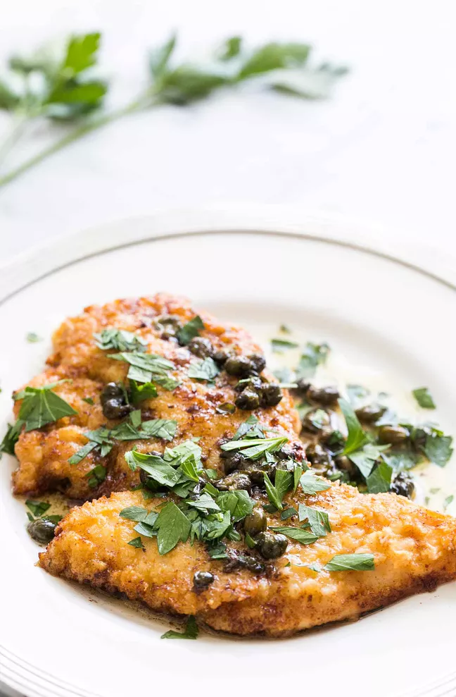

Chicken Piccata
Description
This easy chicken piccata recipe takes just 20 minutes to make! Chicken breast cutlets are dredged in flour, browned, and served with a sauce of butter, lemon juice, capers, and stock or wine.
Ingredients
- 1 1/2 pounds, skinless chicken breast halves, or 4 to 8 chicken cutlets
- 1/2 cup all-purpose flour
- 1/4 teaspoon kosher salt
- 1 pinch ground black pepper
- 3 tablespoons grated Parmesan cheese
- 4 tablespoons extra virgin olive oil
- 4 tablespoons butter, divided
- 1/2 cup low sodium chicken stock, or dry white wine (such as a Sauvignon Blanc)
- 2 tablespoons fresh lemon juice
- 1/4 cup capers
- 2 tablespoons chopped parsley
Steps
-
Prepare the chicken cutlets:
To make chicken cutlets, slice the chicken breast halves horizontally, butterflying them open. If the breast pieces you are working with are large, you may want to cut them each into two pieces.
if the pieces are still thick after butterflying, put them between two pieces of plastic wrap and pound them with a meat hammer to 1/4-inch thickness. -
Dredge the cutlets:
Mix together the flour, salt, pepper, and grated Parmesan. Rinse the chicken pieces in water. Dredge them thoroughly in the flour mixture until well coated.
-
Brown the cutlets:
Heat olive oil and 2 tablespoons of the butter in a large skillet on medium high heat. Add half of the chicken pieces, do not crowd the pan. Brown well on each side, about 3 minutes per side. Remove the chicken from the pan and reserve to a plate. Cook the other breasts in the same manner, remove from pan. Place the breasts on a rack over a roasting pan and keep warm in a 225°F oven while you prepare the sauce.
-
Add the stock (or wine), lemon juice, and capers:
Add the chicken stock (or white wine), lemon juice, and capers to the pan. Use a spatula to scrape up the browned bits. Reduce the sauce by half.
-
Whisk in the remaining butter:
Whisk in the remaining 2 tablespoons of butter.
-
Serve immediately:
Plate the chicken and serve with the sauce poured over the chicken. Sprinkle with parsley.